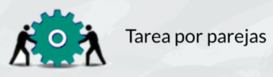
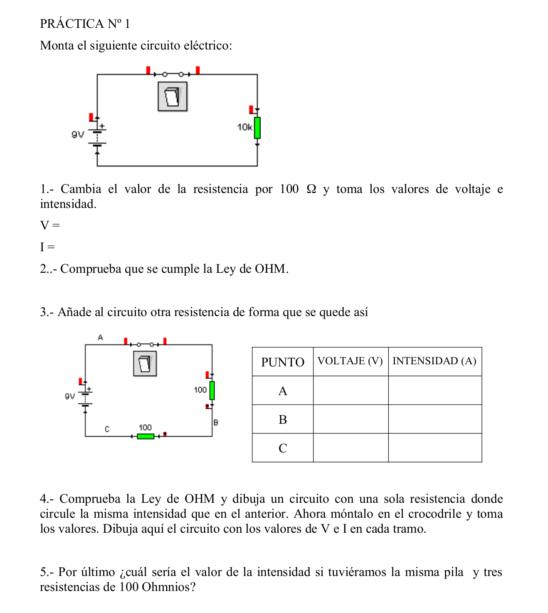
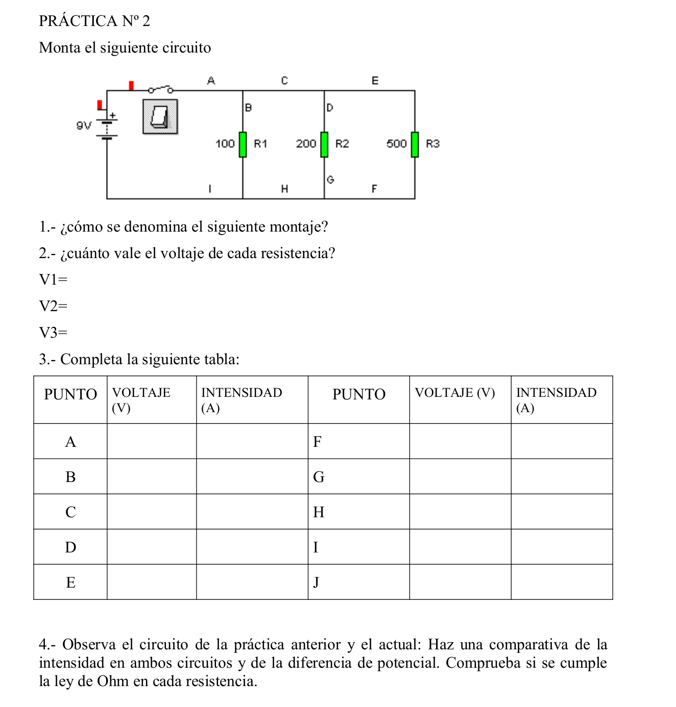
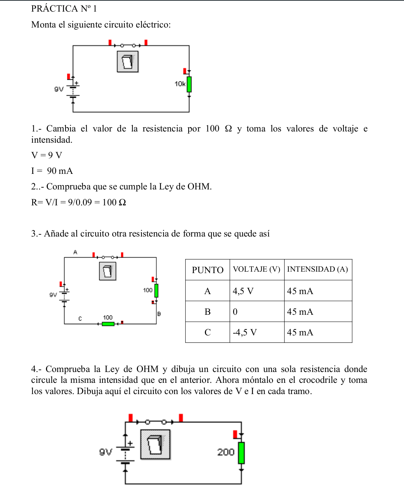

Duración 2 sesiones. 
Entra en tu clase de Tinkercad y en Tinkercad circuits. Usa el simulador para montar los circuitos que se proponen y contesta a las preguntas en tu cuaderno:


Imágenes de los circuitos originales creadas con Crocodile Clips

Imágenes de los circuitos: originales creadas con Crocodile Clips